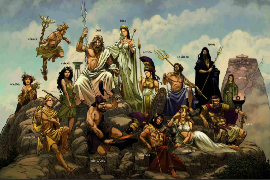

La religion polythéiste est une forme de croyance qui repose sur l’existence de plusieurs dieux, chacun ayant des pouvoirs et des rôles spécifiques liés à la nature, à la vie humaine ou à des éléments comme le soleil, la guerre ou la fertilité. Ces religions étaient très répandues dans les civilisations anciennes comme celles de la Grèce antique, de l’Égypte antique ou encore de la Rome antique, où les peuples rendaient hommage à différents dieux à travers des rituels, des temples et des offrandes. Contrairement aux religions monothéistes, qui reconnaissent un seul dieu, le polythéisme permet une grande diversité de croyances et de pratiques, souvent liées aux traditions culturelles et à l’histoire des sociétés qui les pratiquent.
🌍 Origine du polythéisme
Les premières formes de polythéisme remontent aux civilisations antiques comme l'Égypte ancienne, la Grèce antique et la Mésopotamie. Ces sociétés expliquaient les phénomènes naturels à travers leurs divinités.
⚡ Importance culturelle
Les religions polythéistes ont influencé l’art, l’architecture et même les systèmes politiques. Les temples, statues et mythes sont encore étudiés aujourd’hui.
🧠 Vision du monde
Contrairement aux religions monothéistes, le polythéisme offre une vision plus complexe et variée du monde, où plusieurs forces divines interagissent entre elles.